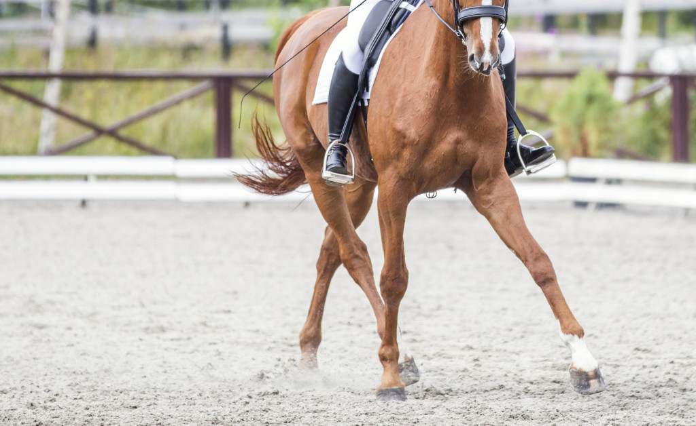
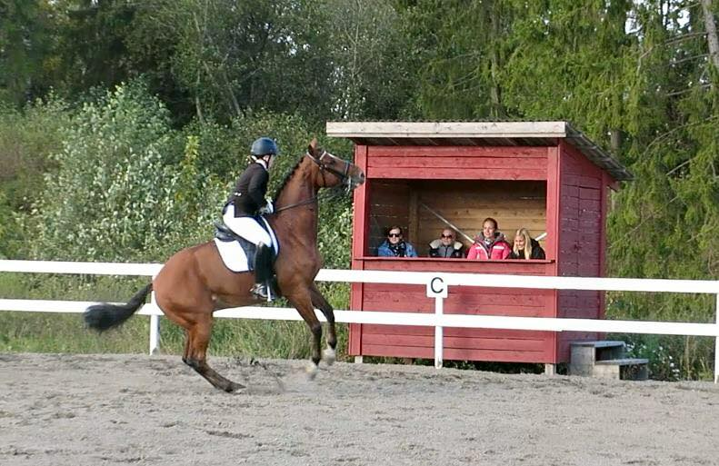
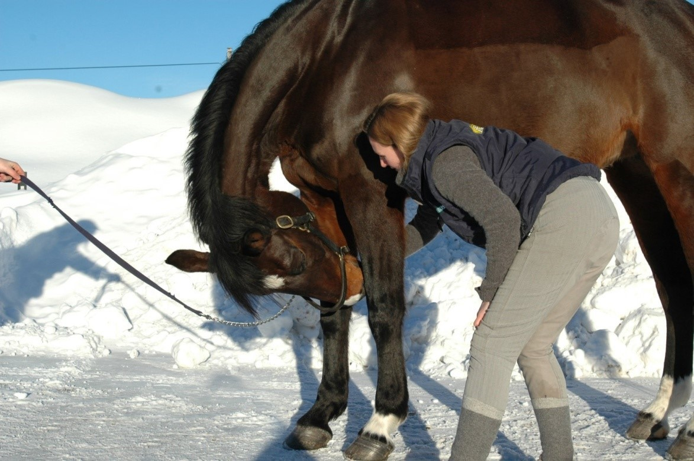
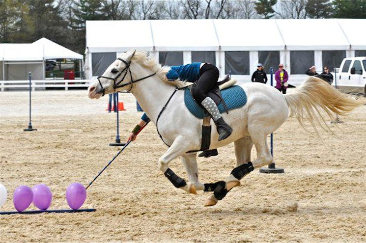

Vil du utvikle deg som dommer innen dressur og bidra til sporten med din kompetanse og dømmekraft?
Dette kurset gir deg den teoretiske og praktiske kunnskapen du trenger for å bli autorisert dressurdommer.

Dressurrdømming for nybegynnere
Lær grunnleggende prinsipper for bedømming av dressurkonkurranser.

Sits og balanse
Forstå hvordan rytterens sits og balanse påvirker ekvipasjen.

Dommerperspektiv
Se og vurder dressurøvelser fra dommerens perspektiv.

Døm øvelser i trav og galopp
Praktisk bedømming av ulike gangarter og overganger.
Hvorfor velge Learning2Judge?
Lær hvor som helst
Tilgang til kursinnhold online hvor og når det passer deg.
Følg fremgangen din
Se din egen utvikling og få statistikk over dømmingen din.
Del erfaringer
Lær av andre dommere og del din kunnskap med fellesskapet.